创建工程
一个完整的PCB工程应该包含lib、schdoc、pcbdoc,在本节我们先学习绘制schlib即原理图。
创建之后的文件目录参考：

尽量避免直接打开上述单个文件，可以打开.PrjPcb项目文件

元件符号

格点大小：
一般管脚设置成100mil,图形元素格点为10mil
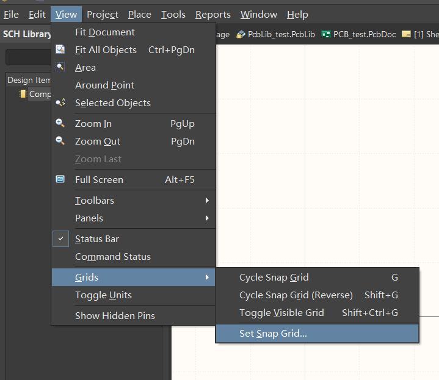简单元器件的绘制(自制原理图库)
原理图库只是实物器件在图纸上的表示，无需和实物尺寸一样
电容(CAP)
Designator:C?
Comment:容量
Description:其余描述
电阻(RES)
Designator:R?
Comment:容量
Description:其余描述
Add footprint:添加封装

右侧Properties中设置各类参数：

二极管(DIO)
发光二极管LED
Designator:D?
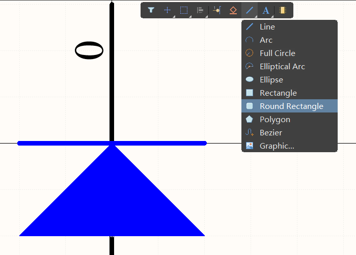绘制特殊图形如圆形、多边形。
通过line shape，可以设置为箭头形式，同理可以在line设置其颜色等。
之后按住shift拖动，可以复制箭头图像。
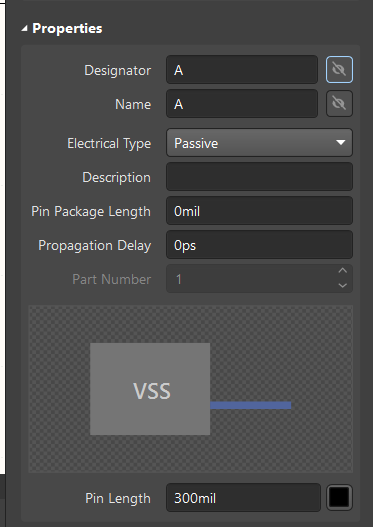A表示正极，一般不显示；同理K表示负极。
运放
具体器件具体命名
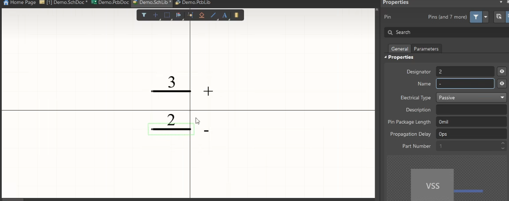 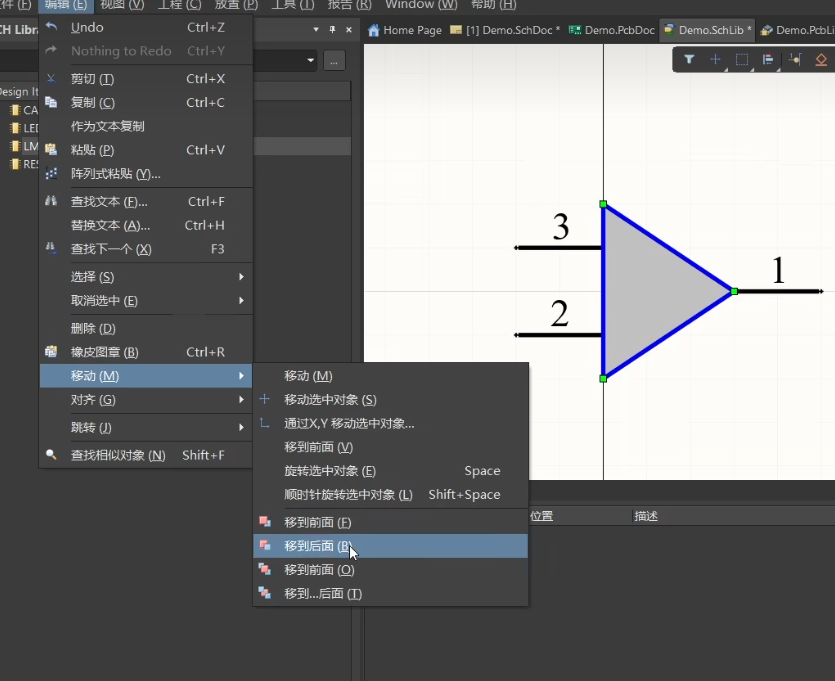将+、-移动到三角形内部。
一个器件可以有多个part
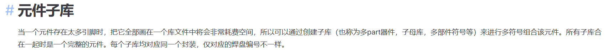 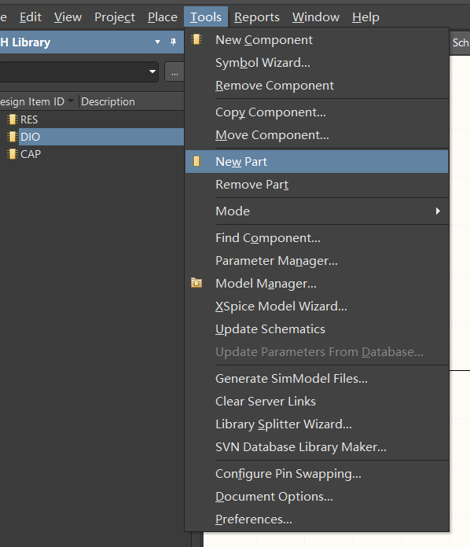
原理图库的调用
其他库中调用
在他人的原理图库中，可以调用元器件


复制后粘贴到自己的SCH Library
导入外部库
.intlib
集成库，既有原理图库，也有封装
.schlib
仅原理图库
.pcblib
仅封装库
一般来说，AD软件下载安装后会自带两个库，但是不能满足我们的需求，比如在绘制STM32F4系列时，我们需要用到F4的库，网上找了很多，但是直接导入.intlib最为省事，这里给出了github上的一个文件：[下载地址](https://github.com/ryankurte/altium-library/blob/master/third_party/STMicroelectronics STM32 F4.IntLib)
总结：
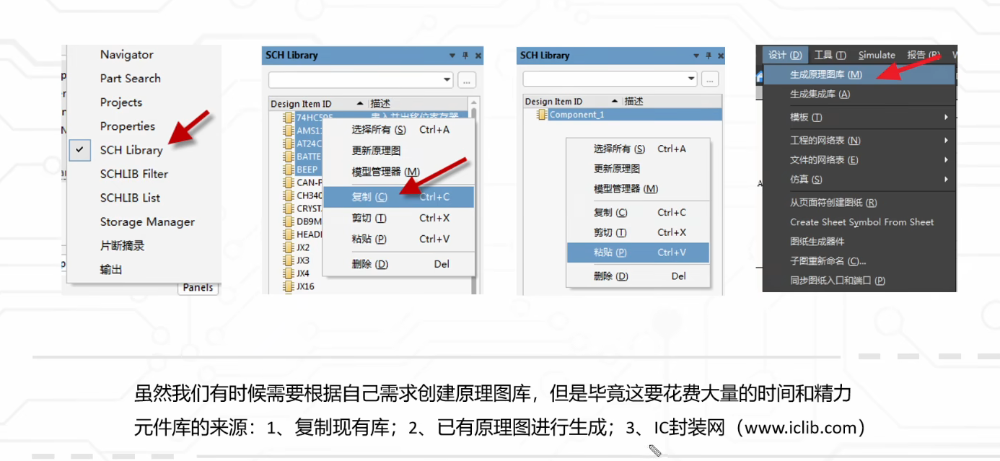原理图库的正确性检查
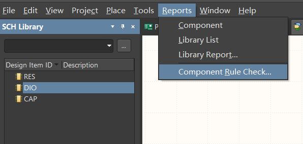勾选后自动检查并生成报告
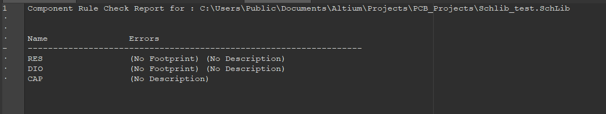可能的报错类型:

原理图的绘制
这里我们以STM32F401RET6为例，尝试简单绘制一下原理图
页面调整
双击原理图边缘进入属性面板，可调整纸张尺寸，网格大小，隐藏表头和边框
设计(D) -> 模板(T) -> 本地(L) 可调用官方的原理图预设模板
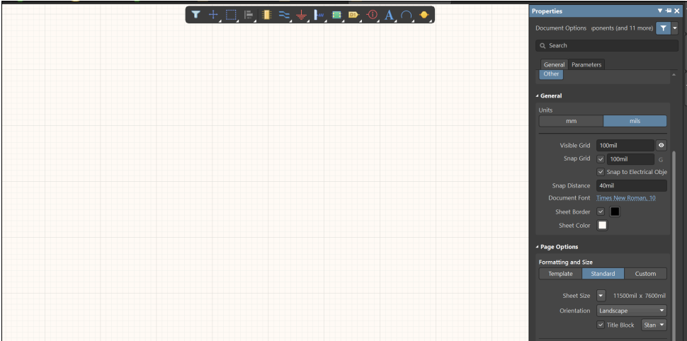芯片绘制
在DataSheet-f401re手册中，我们找到芯片的引脚描述
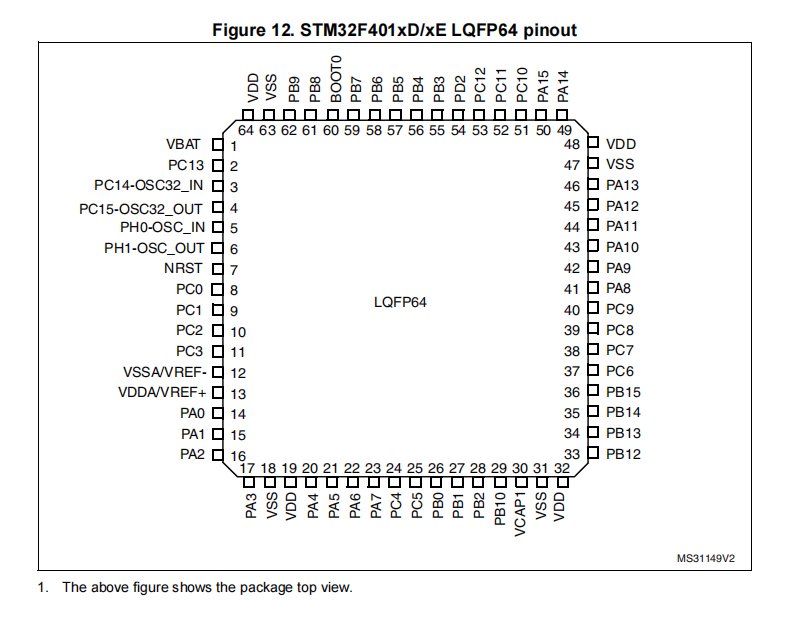UFQFPN48、LQFP64、LQFP100是集成电路的不同封装类型，其中我们使用的属于LQFP64封装
再在.schlib中绘制芯片并放置引脚，右上角properities–>pins可以统一设置引脚名称、编号以及参数。
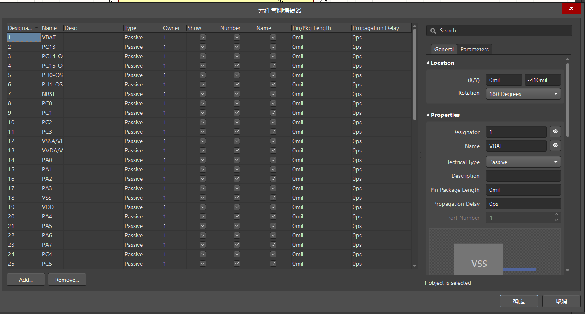芯片引脚分类以及“最小系统”
电源——(VBAT)(VDD,VSS)(VDDA,VSSA)(VREF+,VREF-)等
晶振IO——主晶振IO，RTC晶振IO
下载IO——用于JTAG下载的IO：JTMS，JTCK，JTDI，JTDO，NJTRST
BOOT IO——BOOT0，BOOT1，用于设置系统的启动方式
复位IO——NRST，用于外部复位
GPIO——通用输入输出
前五部分IO组成的系统叫做最小系统
接线与网络标签
为了使连线更加简洁，不易交错，一般采用网络标签
两个相同名称的网络标签默认连接端口，离图连接器等网络标识符可以可表示图之间的网络连接

（按住Alt，鼠标单击某个网络标签，就能看到相同的网络标签对应高亮显示）
整体修改编号
全部元件放入后可整体编号，使每个元件都有标号且不冲突即可
工具(T) -> 标注(A) -> 原理图标注(A）
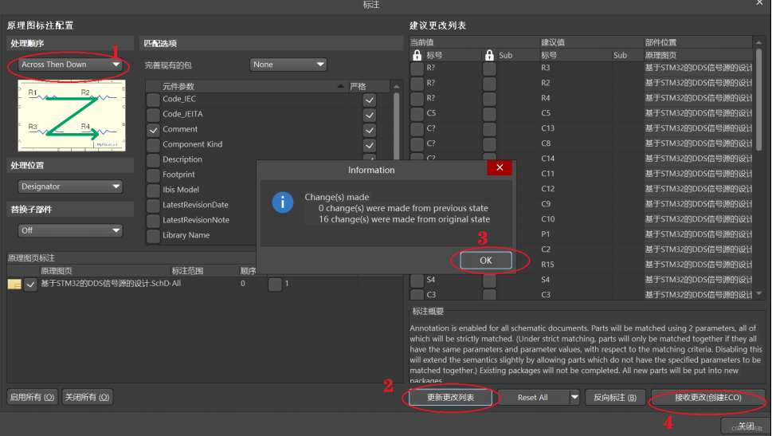划分区块
为了使原理图简便易读，可以用线条将其划分成多个模块，后续设计PCB图时也能有帮助。
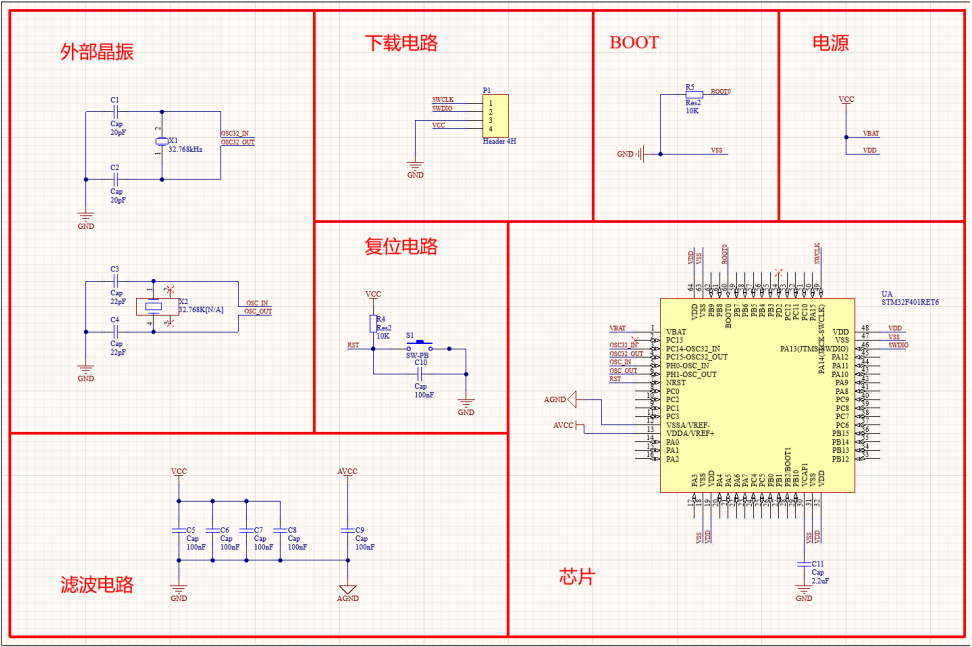封装统一管理
工具(T) -> 封装管理器(G) ，可统一添加封装。
接收变化 -> 验证变更 -> 执行变更
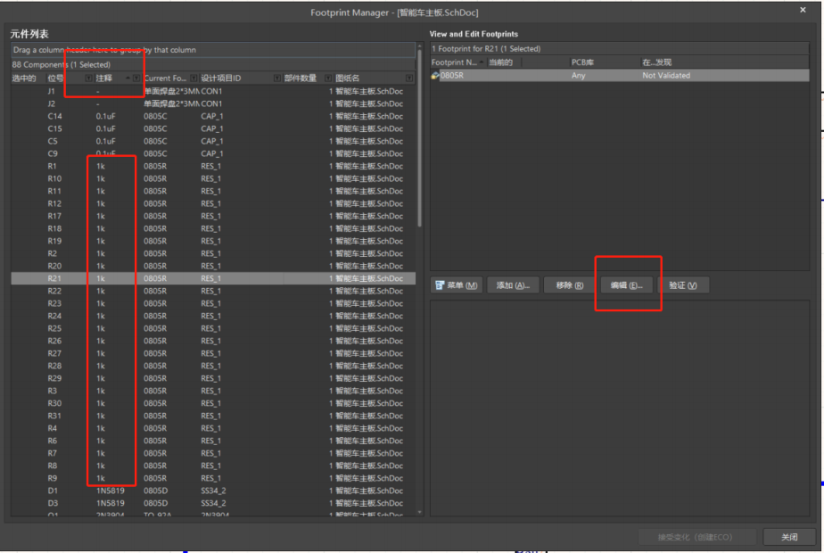编译原理图
工程右键->工程选项(O) 可查看原理图规则设置
集中检查以下对象，可将其配置为错误(只有警告视为编译通过，不会报错)
-
Floating net labels 悬浮的网络标签
-
Floating power objects 悬浮的电源端口
-
Nets with multiple names 重复的网络标签
-
Nets with only one pin 单端网络
-
Un-Designated parts requiring annotation 需要注释的未指定文件
-
Duplicate Part Designators 重复的元件位号
项目(C) ->Validate PCB Project，编译原理图，原理图设计不合理处(走线悬空，元件之间堆叠等)，会出
现报错，可根据软件的报错信息定位报错位置，做出相应的修改。
原理图打印
文件(F) -> 智能PDF(M) 进入PDF创建下载
选择输出文档范围，是否对BOM表(物料清单)进行输出，参数设置
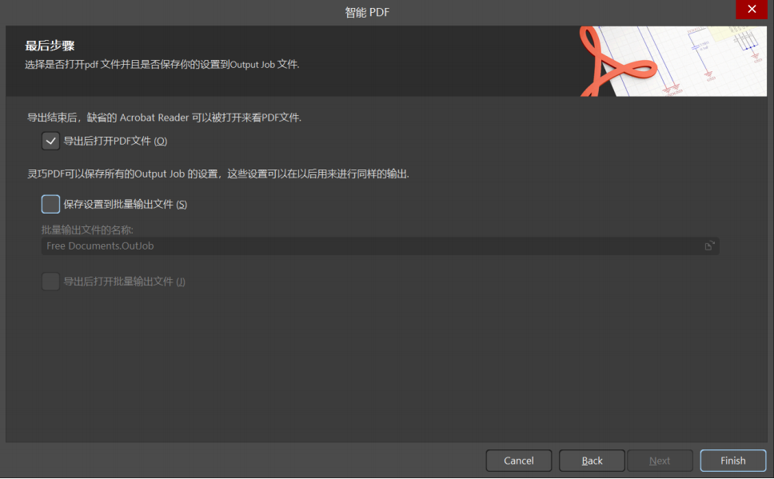